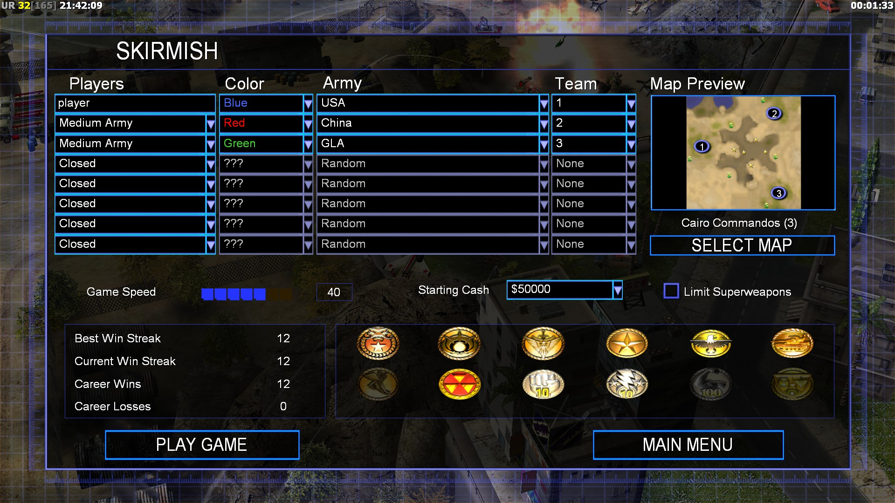
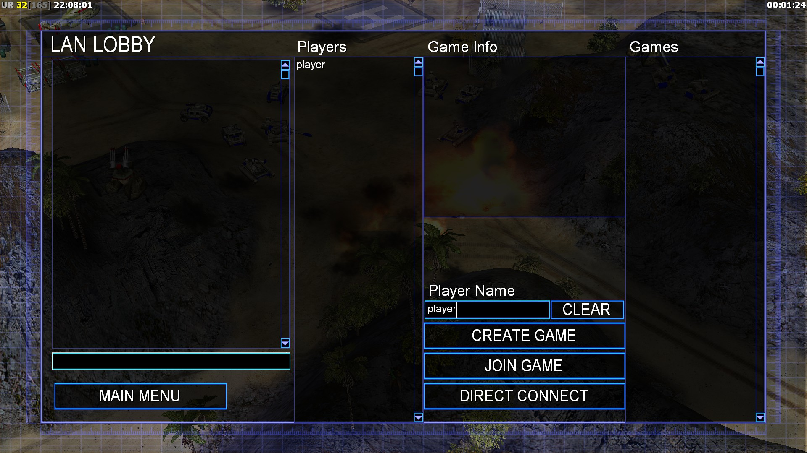
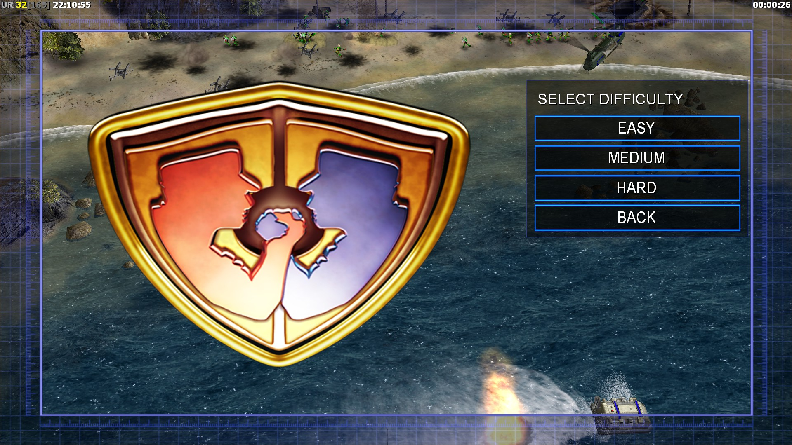
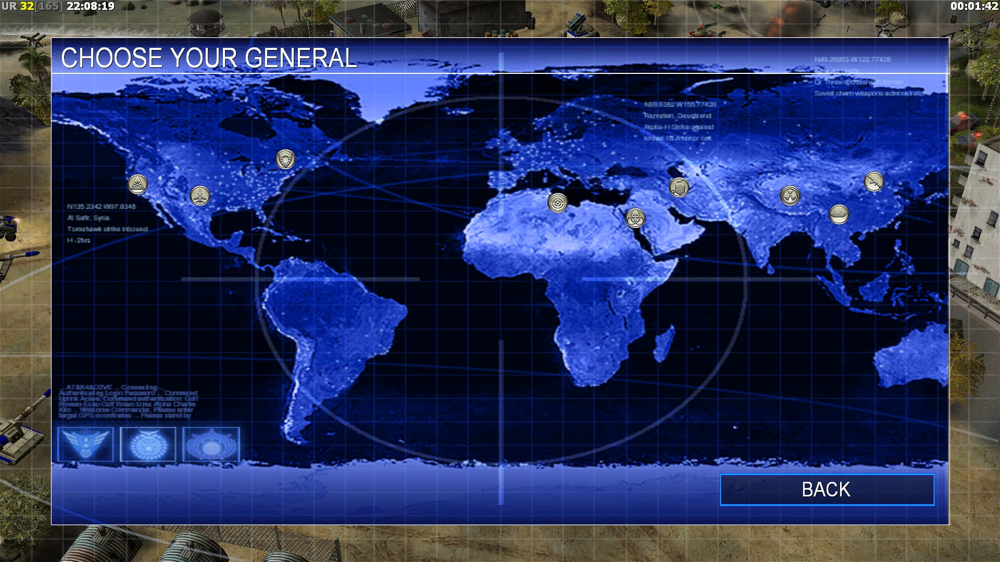

There are four modes for C&c generals zero hour that is Campaign, skirmish, multiplayer or online play, and generals challenge. this page will talk about skirmish, multiplayer, and generals challenge Campaign will be in a different topic.
About CampaignSkirmish is a sandbox type mode where you get to set the difficulty and fight other factions as you like.

Multiplayer or online play can have a custom game up to eight players. you can team up to victory or play free for all and be the last one standing .

Choose one of the nine general to play as and face up to seven generals and defeating one by one of them.

